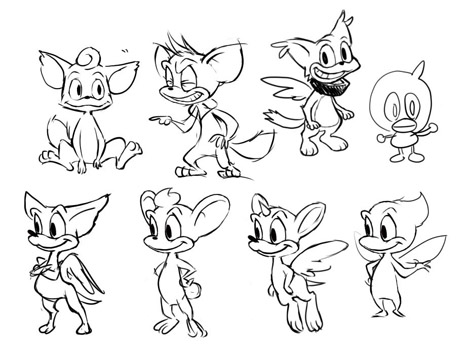
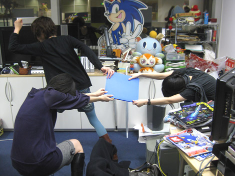

『発売4日前！チップをハミだし(後編)』
2009年02月15日
こんにちは、マツバラです！
PS3/Xbox360版『SWA』発売まであと4日となりました！
前回に引き続き、
『SWA』アートディレクターの川村さんのお席に来ています！
こんにちは、ヨシノです。
『SWA』のアイドル、「チップ」の
知られざる過去をハミだしております。
川村さん、お願いします！
川村：はい、どうぞ～。

もうだいぶ、
完成形のチップに近いですね。
今より少しスマートかな？
川村：チップの性格設定には少し苦労したな。
当初はもう少し幼ないキャラクターのつもりだったんだけど、
いろいろ議論した結果、
最終的に「小学生くらい」というラインに落ち着いたの。
性格のイメージ年齢が上がったわけですか？
一体、何故。
川村：「可愛らしいキャラクター」は、日本では受け入れられるけど、
欧米ではそれよりも「カッコいいキャラクター」のほうが好まれるの。
だから、口調や動きも、甘えたようなところを極力少なくして、
少し生意気なかんじにしてみたり、ね。
なるほど！
『SWA』は世界中で売られるわけですからね！
様々な違った好みを持つ国に
受け入れられなきゃいけないなんて
大変ですね。キャラクターデザイン。
川村：可愛くなりすぎないように、程よくブサイクにした(笑)
コダワリは、手足がちっちゃいところ。
そういえば、
手足が大きいことが多い「ソニック」キャラクターの中で
チップは少し異色ですね。
では、川村さん、
ブログをご覧の皆さまへ、チップへの思いなどを
ハミだして頂けますでしょうか！
川村：制作上海外との嗜好の違いで一番難航したのはチップでした。
とはいえ、コミカルで面白いキャラクターになったと思います。
キャラクターに命を吹き込んだアニメーションにもご注目ください。
川村さん、ありがとうございました！
いや～、良いものをハミだして頂きました。
川村：そうだ。
キャラクターデザインといえば、
こんなものもあるよ～。
何ですか？
この青いファイル。
川村：ふふふ。
「ウェアホッグ」の、初期設定画。
特別に見せてあげるね。
ええっ！！
…………！！
川村：ボツになっちゃった案も沢山入ってるよ。
「ウェアホッグ」をデザインした棚橋君の苦労が詰まったファイル。
ただし、これは公開用じゃないから、
パッと見て返してね～。
ええっ、ハミだしちゃダメなんですか！
川村：うん、棚橋君が恥ずかしがると思うし。
そこを、なんとか。
川村：うーん、頼まれてもなあ。
……マツバラ。いくよ。
……OK、ヨシノ。

ほりゃ―――！！
くぬ――――！！
川村：ええ―――！？
何するの―――！！
取った―――！！
マツバラ、グッジョブ！！
すいません川村さん、
このネタは貰っていきます！
私たちには、
ハミだせるものは徹底的にハミだすという使命があるのです！
川村：こ、こら―――！！
それでは皆さま、
今回はこれで失礼しまーす！！
次回、「ウェアホッグ」の恥ずかしい秘密☆ をべろっとハミだします。
お楽しみに～。
日時: 2009年02月15日 16:00 | パーマリンク


 ソニックを愛する、元気な『SWA』2年目プランナー。
ソニックを愛する、元気な『SWA』2年目プランナー。 マイペースな『SWA』2年目プランナー。
マイペースな『SWA』2年目プランナー。
 ご意見・ご要望はこちら
ご意見・ご要望はこちら RSS
RSS